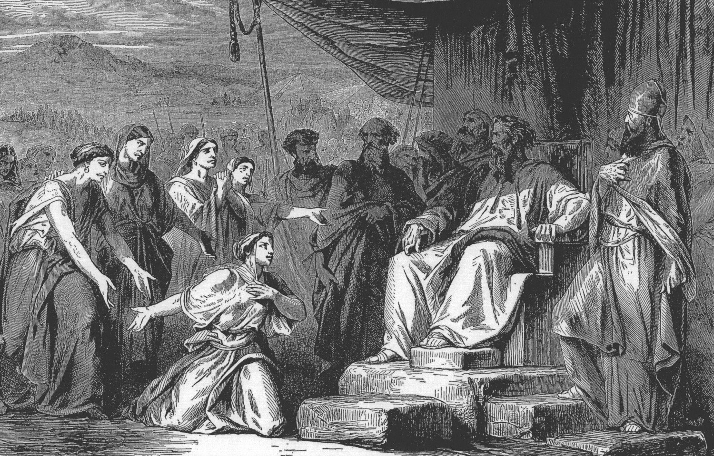

Joshua 17 — The Mister Translation

⚠ The engraving stages the five daughters' FIRST appearance, before Moses at the tent of meeting (Numbers 27:1–2, already on these pages) — no artwork of this chapter's own SECOND scene, forty years on before Eleazar and Joshua, is known to survive. This project shows the nearest artistic record of the five sisters rather than inventing the later meeting; the gesture of appeal is the same gesture this chapter has them repeat.

★★★ This verse is the second and last of the two places in the whole Hebrew Bible where a tribe’s own lot is said to have simply BEEN, rather than to have gone out. ‘And the lot WAS,’ vayehi ha-goral, stands in exactly two verses of the Hebrew Bible — Judah’s own opening at Joshua 15:1 (already on these pages) and this one. Joshua 16’s own closing note and this project’s own goral dictionary entry both forecast this exact return. Of Joshua’s other eight tribal lots, six open with the ordinary casting verb, ‘and the lot WENT OUT’ — Ephraim’s next door (Joshua 16:1, already on these pages) and five in Joshua 19 (not yet on these pages) — and two open ‘and the lot CAME UP’: Benjamin’s at Joshua 18:11 (now on these pages) and Zebulun’s at 19:10 (not yet on these pages). Manasseh, Joseph’s actual firstborn, draws the rarer verb that matches Judah’s own rank; Ephraim, the brother Jacob’s crossed hands put ahead of him at the blessing, does not.
★★ Machir and Gilead are named in the same breath this chapter opened its own survey with four chapters ago, and the same open question returns with them. ‘Machir the firstborn of Manasseh, the father of Gilead’ repeats Numbers 32:39–40’s own naming almost verbatim (already on these pages) — whether the man fathered the region or the region’s own name attached itself to the man who conquered it is a question Machir’s own entry already declines to settle, and this verse gives no new reason to settle it either way.
★★★ Zelophehad’s five daughters DRAW NEAR a second time, and the verb itself is the proof: it stands in exactly two verses of the whole Hebrew Bible. The feminine form of ‘draw near,’ va-tiqravnah, stands in exactly two verses — Numbers 27:1 (already on these pages), where the five come to ASK, and this verse, where they come to COLLECT. ⚠ And they do not quote their own original petition — they quote the ruling it won. At Numbers 27:4 the daughters themselves had asked for ‘a possession,’ achuzah, among their father’s brothers, a plainer word with no promise of permanence built into it; the law Jehovah actually handed down three verses later used a fuller phrase, ‘a possession of inheritance,’ achuzat nachalah (Numbers 27:7, already on these pages). Here, standing before Eleazar and Joshua, the five quote neither their own words nor even the law’s own fuller phrase whole — they say Jehovah commanded Moses to give them ‘an inheritance,’ nachalah bare, the ruling’s own noun and not their own. Nine chapters and forty years after they first stood up, the daughters know the statute by its own operative word, not by the request that produced it.
★ A third Hebrew word for a land-share stands beside the chapter’s other two, and it is the most concrete of all of them. Verse 5’s ‘ten shares,’ chavlei, is chevel — literally A CORD, the surveyor’s own measuring-line, the physical object behind an abstraction the way goral, a drawn lot, and nachalah, an inheritance, are each themselves abstractions built on a concrete root. Three words for the identical idea of a tribe’s own portion cluster inside these six verses, and none of the three is merely a synonym for either of the others: one names the instrument of chance, one names the instrument of measurement, and one names the legal status the first two instruments were only ever means toward.
★★ Abiezer, the first name in Manasseh’s own clan roster, returns centuries later as one man’s own clan — spelled two different ways for two different grammatical jobs. The clan name itself, Aviezer, one word, stands in seven verses of the whole Hebrew Bible: this one; two in Judges (6:34; 8:2, neither yet on these pages) naming the clan as a fighting collective, mustered behind Gideon and later resenting him for leaving it the smaller share of Midian’s plunder; and four more (2 Samuel 23:27; 1 Chronicles 7:18; 11:28; 27:12, none yet on these pages) naming an unrelated man of Anathoth, one of David’s own mighty men, who merely happens to share the name. ⚠ Gideon’s own title, by contrast, is never this one word: Judges 6:11 calls his father ‘Joash, avi ha-ezri’ — the identical two root-letters of Ezer, but split into two words with the definite article driven into the middle of them, the ordinary way Hebrew turns a clan-name into a gentilic adjective. The clan that drew its own share of ground in this verse is the clan a judge of Israel will one day lead out of it.
★★★ This verse is the second half of a promise Joshua 16 made one chapter ago: the identical landmark, read from the other side. ‘Michmethath,’ with the definite article as both verses spell it, stands in exactly two verses of the whole Hebrew Bible — Joshua 16:6 (already on these pages), marking Ephraim’s own northern border, and this one, marking Manasseh’s southern border at the identical point, ‘facing Shechem.’ Two surveys, run by two different hands for two different tribes, agree on the one name either bothers to repeat — exactly as Joshua 16’s own closing note said they would.
★★★ The brook of Kanah keeps the second half of that same promise, and this time states outright what Joshua 16 only implied. ‘The brook of Kanah’ stands in exactly two verses of the whole Hebrew Bible — Joshua 16:8 (already on these pages), which merely closes Ephraim’s own border at the brook, and this verse, which spells out the arrangement Joshua 16:9 only named in passing: towns south of the brook, inside Manasseh’s own nominal territory, belong to Ephraim, while Manasseh’s own border itself runs along the brook’s north side. One stretch of ground, two tribes’ own surveys, and this translation lets both stand rather than folding them into a single map neither chapter actually draws.
★★ Tappuah fulfills the forward reference Joshua 16 already made to this verse — and the arrangement is the identical enclave, stated from Manasseh’s own side this time. Joshua 16:8 (already on these pages) named ‘the land of Tappuah’ as the border between Ephraim and Manasseh without saying which tribe held which half; this verse resolves it exactly as Tappuah’s own entry already anticipated — the town itself belongs to Ephraim, while the land of Tappuah around it belongs to Manasseh. A city inside a neighbor’s own fields, reported twice, once per owner.
★ Manasseh’s western half is, by this verse, enclaved inside two tribes it has not yet even met in this book’s own survey order. Manasseh’s own entry already calls it the one tribe settled on both sides of the Jordan; verse 11 adds that even its WESTERN half does not sit as one solid block, but holds six named towns scattered inside Issachar’s and Asher’s own territory, neither of which has yet drawn its own lot in this book’s own sequence (Joshua 19, not yet on these pages). A tribe already split by a river is split again, twice more, by two neighbors’ own ground.
★★ Beth-shean, named first in this verse’s own list, is a city this book cannot yet know the fame it is about to earn. Beth-shean’s own entry, new on these pages, traces the name forward to the one scene that made it famous — and this chapter’s own six towns (Beth-shean, Ibleam, Dor, En-dor, Taanach, Megiddo) are a guest list for a later battlefield this book has no way of foreseeing.
★★★ Verse 13’s closing word is this chapter’s own fulfillment of a forecast Joshua 16 already made: the fuller phrase there shortens to the bare noun here. The word itself, ‘to forced labour,’ stands in exactly two verses of the book of Joshua — Joshua 16:10 (already on these pages), in its fuller two-word form ‘a servant for forced labour,’ and this verse, in the bare one-word form this project’s own mas dictionary entry already said would arrive here. Judges 1 (already on these pages) repeats the bare form four more times (1:28, 30, 33, 35) — the refrain this verse is the first instance of.
★★★ And the whole verse, not merely its last word, is repeated almost letter for letter one book later — about the same tribe, the same failure, and the same towns. This verse’s own opening clause, ‘and it came about, when the sons of Israel grew strong,’ is answered almost word for word at Judges 1:28 (already on these pages): ‘and it came about, when Israel grew strong, that they put the Canaanites to forced labour’ — the identical closing three words, et ha-kena’ani la-mas, in both verses. Judges 1:27, one verse earlier, even reports the same six towns this chapter’s own verse 11 just listed — Beth-shean, Taanach, Dor, Ibleam, Megiddo — in a different order and with one name missing: En-dor, present here, drops out of the later report. Two books tell the identical failure, in nearly identical words, over a guest list that shrinks by one between them.
★★ Ephraim’s own failure at Gezer, one chapter back, and Manasseh’s own failure here are reported by the same method, and Judges keeps both. Joshua 16:10’s own note already traced how Judges 1:29 repeats Ephraim’s own verdict on Gezer by name; this verse extends the identical pattern to Manasseh, and Judges 1:27–28 keeps it too, naming the tribe outright where this book’s own Ephraim-chapter was named and this book’s own Manasseh-chapter now is.
⚠ The English shelf splits in three on how far v13’s own fallback goes toward outright bondage, matching the identical three-way split this project already found at Joshua 16:10. NIV and NWT 1984 both name it plainly, ‘forced labor’; KJV, Geneva and Douay-Rheims all soften it to a tax without the labour — ‘tribute,’ ‘under tribute,’ ‘made them their tributaries’; and TLB alone says ‘forced the Canaanites to work AS SLAVES’ — past any witness at either chapter. This translation keeps ‘forced labour,’ the same choice made at 16:10, on the same principle: the Hebrew names an institution, not a euphemism, and the word should neither soften it to a tax nor sharpen it past what the text itself states.
★★★ The complaint and the answer share the same two words this chapter has already used once each, and Joshua’s own answer refuses to grant the first. ‘One lot,’ goral echad, and ‘one share,’ chevel echad, are the sons of Joseph’s own words at v14, the identical pair of nouns verse 5 already used of Manasseh’s own ten shares; Joshua’s own reply at v17 answers only the first of the two, ‘you shall not have one lot only,’ and never repeats ‘chevel’ at all. The land he actually offers at v18 is not a second lot cast by chance, but a forest standing where no lot has gone — something to be won by an axe, not drawn by a token.
★★ ‘The Perizzites and the Rephaim’ (v15) names the land Joshua offers using the Bible’s own two labels for two different kinds of pre-conquest peoples, together in one half-verse. The Perizzites are a named nation on every list of Canaan’s own peoples since Genesis; the Rephaim are the umbrella name for the extinct giant-clans this project has already tracked from Abram’s own day through Og of Bashan. Joshua offers the house of Joseph a forest shared by an ordinary nation and the last remnant of a vanished one — ground no other tribe has yet been asked to clear.
⚠ The sons of Joseph answer a land offer with a military objection, and Joshua’s own reply does not deny the objection — it repeats the land offer anyway. V16’s own ‘chariots of iron’ is not new information: it is the identical phrase v18 then throws back at them as the very reason they, not Joshua, must drive the Canaanites out. The chapter ends on an imperative, not a plan — and this book’s own closing chapters (Joshua 17:12–13, this very note’s own verses) have already shown what actually happened instead.
★ The valley of Jezreel (v16) is named here for the first time in this book’s own sequence, generations before the valley earns the history its own entry already carries forward — a coup, a dynasty’s own end, and a prophet’s own naming of a child after it. The sons of Joseph name it only for the iron chariots massed in it; nothing in their own complaint anticipates what the name will come to mean.
⚠ The shelf splits on whether Joshua’s own verb at vv15 and 18 names an act of clearing or an act of cutting — and the NWT changes sides of that split between its own two editions. KJV, Geneva, Douay-Rheims, ASV and NWT 1984 all read ‘cut down’ / ‘cut trees’ / ‘cut down room for thyself’; NIV, TLB and NWT 2013 all move to ‘clear land’ / ‘clear out the forest land’ / ‘clear it’ — the 2013 revision crossing to the opposite side of the exact line its own 1984 predecessor sat on. The Spanish shelf runs the identical line: RV 1909 keeps the concrete ‘corta,’ cut, while RV60 and NVI both move to ‘desmontes’ / ‘limpien,’ clearing. The Hebrew verb itself, bara, names the clearing of ground rather than the felling of any one tree; this translation follows the NIV/TLB/NWT 2013/RV60/NVI side of the split, ‘clear ground,’ on the reader-check standard — an English reader who meets ‘cut it down’ for a whole forest hears an impossible single stroke, where ‘clear ground’ names the actual, slower work the verb itself describes.
⚠ TLB alone folds the sons of Joseph’s own objection (v16) and Joshua’s own final answer (v18) into one continuous exchange, erasing the verse boundary the rest of the shelf keeps. Every other witness fetched for this chapter keeps v16’s complaint and v18’s answer as two separate statements either side of v17’s own transition; TLB’s own paraphrase prints Beth-shean, the valley of Jezreel, ‘Fine,’ and Joshua’s reply all inside its own v18, collapsing three verses’ worth of alternating speech into one paragraph. This translation keeps the Masoretic verse division, as it does throughout.
Echoes paid. Joshua 16’s own forecast of the rarer casting verb returning for Manasseh is confirmed at v1: vayehi ha-goral stands in exactly two verses of the whole Hebrew Bible, this one and Joshua 15:1. Joshua 16’s own forecast of Michmethath and the brook of Kanah marking the identical border from Manasseh’s own side is confirmed at vv7 and 9. Joshua 16’s own forward reference on Tappuah is confirmed at v8. This project’s own mas dictionary entry’s forecast of the bare one-word refrain arriving at v13 is confirmed, and Judges 1:28 (already on these pages) is now known to repeat this verse’s own closing clause almost verbatim. Zelophehad’s own entry forecast that ‘draw near’ would recur exactly once more, at this chapter’s v4; confirmed, and read now to be a different quotation than their own first petition.
Echoes paid, a book early. Judges 1:27–29 (already on these pages) already repeats this chapter’s own vv11 and 13 almost word for word, with En-dor dropped from the town list. Hosea 1 (already on these pages) already carries the valley of Jezreel, named at v16 only for its iron chariots, into the sentence a prophet’s own child-name pronounces on it.
Echoes planted. Judges 6 and 8 (not yet on these pages) are where Abiezer, named first among Manasseh’s own clans at v2, returns as Gideon’s own fighting clan. 1 Samuel 31 (not yet on these pages) is where Beth-shean, named first at v11, becomes the place Saul’s own body is hung on the wall. Joshua 19 (not yet on these pages) is where Issachar and Asher, named here only as the tribes Manasseh’s own enclaves sit inside, finally draw their own lots. 2 Kings 9–10 (not yet on these pages) is where the valley of Jezreel becomes the site of the coup Hosea's own sentence answers.
Decisions. Hebrew and English verse numbers align through the whole chapter, with no versification shift. Goral is ‘lot,’ gevul is ‘border,’ and nachalah is ‘inheritance,’ each matching this project’s own standing rendering since their last use. Chevel at vv5 and 14 is kept as ‘share’ rather than a literal ‘cord,’ on the reader-check standard: an English reader meeting ‘ten cords fell to Manasseh’ would hear rope, not land, and the note above carries the literal image instead of forcing it into the verse text itself. La-mas at v13 is ‘to forced labour,’ the bare one-word form, kept distinct from Joshua 16:10’s fuller ‘a servant for forced labour’ on the same principle this project has already used to keep near-synonyms apart rather than flattening them to one English phrase. The Masoretic text marks a single setumah after v13, dividing the district survey from the house of Joseph’s own complaint; no other break interrupts the chapter.
Library. Two new encyclopedia entries in both languages: Abiezer (the clan named first in Manasseh’s own roster, forward-linked to Gideon) and Beth-shean (named first among this chapter’s own six towns, forward-linked to Saul’s own death). Five existing encyclopedia entries extended, each in both languages: Zelophehad (the ‘draw near’ forecast fulfilled and read against Numbers 27:4 and 27:7), Manasseh (its own forward reference to this chapter fulfilled), Machir, Tappuah (its own forward reference to vv7–8 fulfilled), and Jezreel (a new, earlier reference added ahead of its own already-written history). Two existing dictionary entries extended, each in both languages: goral (the vayehi count completed at exactly two) and mas (the bare one-word form, against Joshua 16:10’s fuller one). No new dictionary entry for chevel — a near-synonym worth naming in a note, not yet a word this project has met often enough to warrant its own glossary entry. No new entries for Helek, Asriel, Shemida, Michmethath, the brook of Kanah, Ibleam or En-dor — bare survey names, matching how this book’s own border chapters have already left the great majority of theirs unlinked.
⚠ A note on order: Joshua stands on these pages at chapters 1–18, and at Judges 1:8, 13, 21 and 29 out of sequence. Joshua 19–24 remain the open sequence; next in this book is Joshua 19, where the other six lots come out in order — Simeon’s inside Judah’s portion — until the whole land is divided at the door of the tent of meeting.